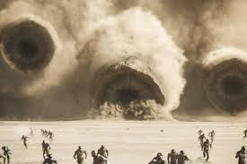
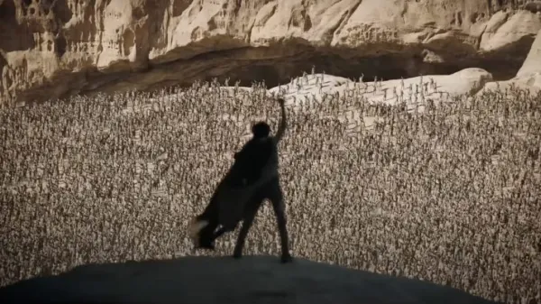
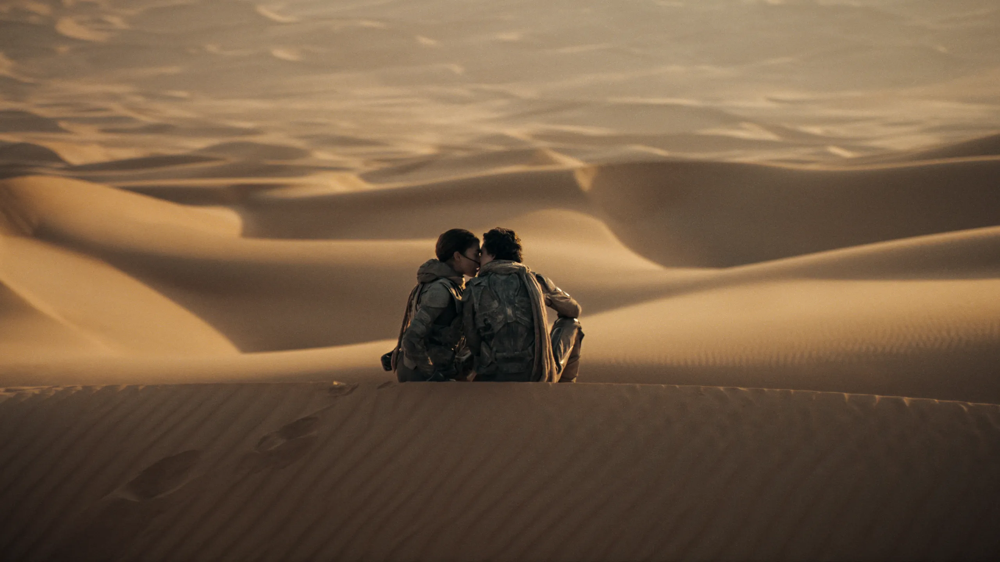

ScreenScore
Dune 2 (2024)

Sinopsis
Paul Atreides se une a Chani y los Fremen mientras busca venganza contra los conspiradores que destruyeron a su familia.
Reparto
- Paul Atreides: Timothée Chalamet
- Chani: Zendaya
- Jessica: Rebecca Ferguson
- Stilgar: Javier Bardem
- Gurney Halleck: Josh Brolin
- Feyd-Rautha: Austin Butler
Detalles Técnicos
- Director: Denis Villeneuve
- Productores: Denis Villeneuve, Tanya Lapointe, Mary Parent, Patrick McCormick, Cale Boyter, Joseph M. Caracciolo Jr.
- Guion: Denis VilleneuveJon SpaihtsFrank Herbert
- Género: Ciencia ficción, acción.
- B
Opiniones de los Críticos
"Mantiene el grandioso estilo visual de la primera (...) adolece de una molesta superficialidad a la hora de retratar a los Fremen (...) la película tiene dificultades para abarcar plenamente los matices del texto anti-imperial y ecológicamente distópico de Herbert"– Los Angeles Times
"La superproducción brutal del año (...) En términos de puro espectáculo, conmoción y admiración, Villeneuve ha producido una adaptación de gloria y poder increíble" – The Guardian
Galería de Imágenes


